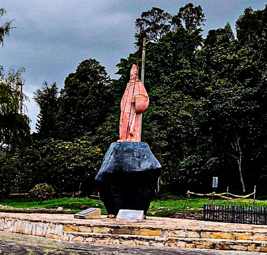
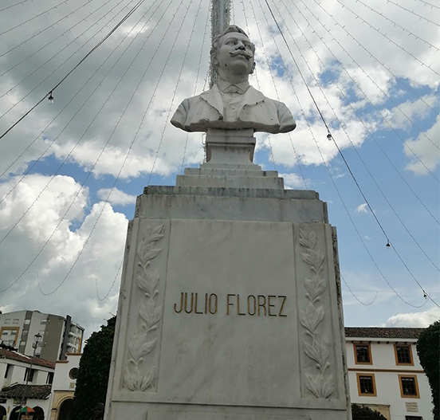
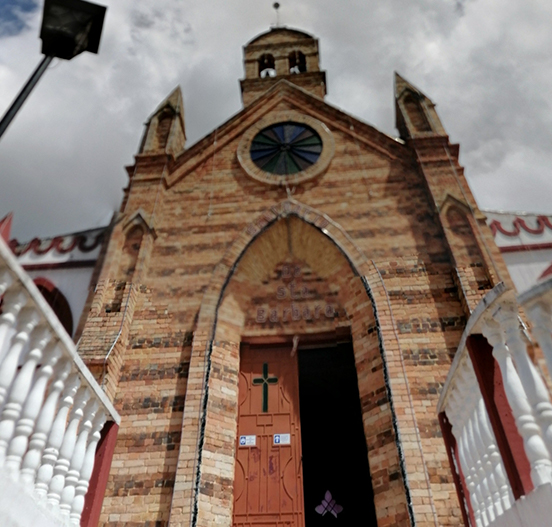
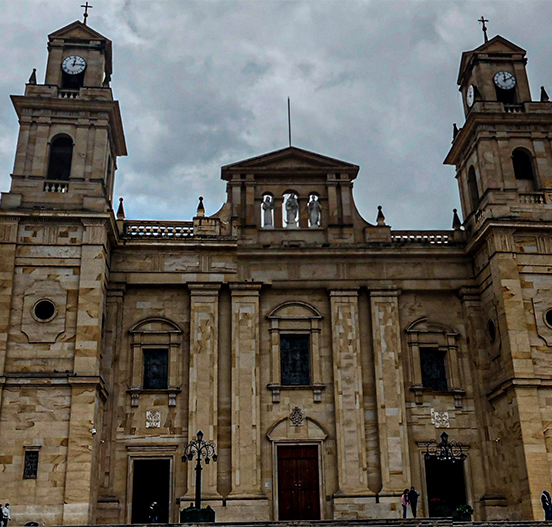
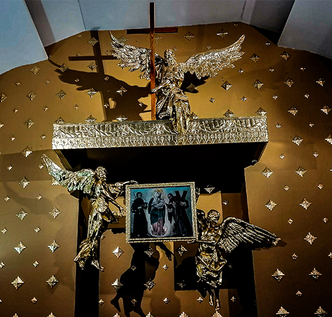

Recorrido
Cultural - Turístico
Chiquinquirá
Boyacá
Inicio
Lugares
Historia
Contacto
Parque David Guarin

Parque Juan Pablo II

Parque Julio Flores

Mirador Santa Barbara

Basílica de Nuestra Señora del Rosario

Nuestra Señora del Rosario la renovación